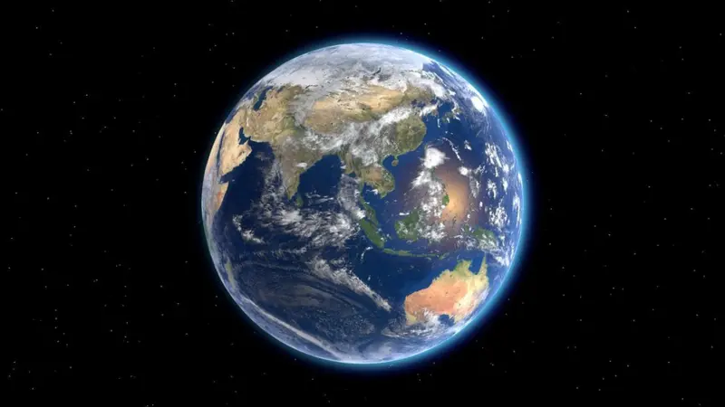
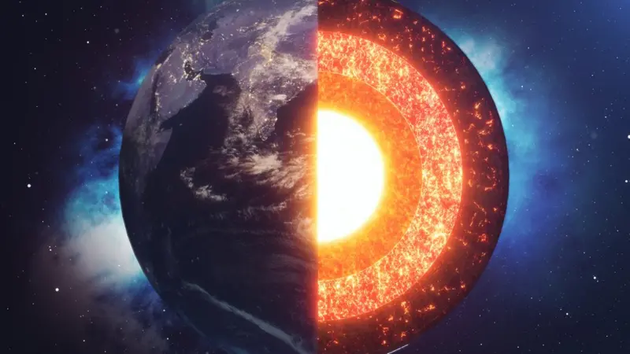

5 Fatos sobre Nosso Planeta!
1. A Terra não é uma esfera perfeita!
Nosso planeta geralmente é representado como uma esfera perfeita, mas essa não é sua forma precisa. A Terra é achatada nos polos, então sua forma é mais precisamente chamada de "esferoide achatado". Como em outros planetas, o efeito da gravidade e da força centrífuga produzida pela rotação em seu eixo gera achatamento polar e alargamento equatorial. Assim, o diâmetro da Terra no equador é cerca de 43 km maior que o diâmetro de um polo ao outro.
2. Água cobre mais de 70% da Terra!
Na Terra, a água existe nos estados sólido, líquido e gasoso. Além disso, cobre quase três quartos da superfície da Terra na forma de geleiras, pântanos, lagos, rios, mares e oceanos. Cerca de 97% de toda a água do planeta existe como água salgada nos oceanos.
3. O espaço começa cerca de 100 km acima da Terra

A fronteira entre a atmosfera e o espaço é conhecida como a Linha Karman, que fica 100 km acima do nível do mar. Cerca de 75% da massa atmosférica encontra-se nos primeiros 11 km de altitude acima da superfície do mar.
4. A Terra tem um núcleo de ferro
A Terra é o planeta mais denso e o quinto maior do sistema solar. Acredita-se que o núcleo da Terra seja uma bola sólida com um raio de cerca de 1.200 km. É composto principalmente de ferro, que representa cerca de 85% de seu peso, e níquel, que representa cerca de 10% do núcleo.
5. A Terra é o único planeta conhecido por ter vida
A Terra é o único corpo astronômico do universo no qual pudemos verificar a existência de vida. Existem atualmente cerca de 1,2 milhões de espécies animais catalogadas, embora acredita-se que esta seja apenas uma pequena percentagem do total. Em 2011, os cientistas estimaram que o mundo natural continha cerca de 8,7 milhões de espécies como um todo. A Terra foi formada há aproximadamente 4,5 bilhões de anos e as propriedades físicas da Terra, sua história geológica e sua órbita permitiram que a vida existisse por milhões de anos.